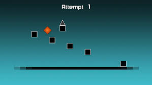

The Impossible
The Impossible Game é um desafiador jogo de plataforma com um único botão, onde os jogadores guiam um quadrado laranja sobre obstáculos em sincronia com uma trilha sonora. Conhecido por sua alta dificuldade, qualquer erro resulta no reinício da fase, embora um modo de prática com pontos de verificação esteja disponível.
Tutorial:
"Zerar" (completar) o jogo The Impossible Game exige principalmente persistência extrema e prática repetitiva para memorizar o timing exato de cada salto e obstáculo. Não existem truques ou macetes fáceis para vencer a dificuldade intencionalmente alta do jogo, que é sincronizada com a música de fundo
Dicas e Estratégias:
1-Prática e Memorização: O jogo é baseado em tentativa e erro. Você precisará jogar os mesmos trechos repetidamente até memorizar a sequência exata de toques/cliques e o timing perfeito para cada salto.
2-Modo Prática (Practice Mode) com Flags: Use e abuse do modo prática. Ele permite colocar "bandeiras" (flags) em pontos específicos do nível, funcionando como checkpoints. Isso permite treinar as seções mais difíceis isoladamente sem ter que recomeçar do zero.
3-Timing Musical: A jogabilidade é sincronizada com a trilha sonora. Prestar atenção na música e no ritmo pode ajudar a antecipar os saltos e obstáculos, transformando a memória visual em memória auditiva/rítmica.
4-Foco e Paciência: O título do jogo não é por acaso. Ele é projetado para ser frustrante. Manter a calma, fazer pausas se necessário e não desistir após inúmeras mortes são cruciais.
Assistir a Walkthroughs: Se você estiver realmente preso em uma parte específica, pode ser útil assistir a vídeos de jogadores que já completaram o nível. Isso pode revelar a estratégia exata ou o timing necessário para passar de um obstáculo complicado. Você pode encontrar guias completos em vídeo, como a playlist de walkthroughs de todos os níveis de The Impossible Game, no YouTube.
Em resumo, a única maneira de "zerar" The Impossible Game é através da dedicação e da repetição incansável de cada seção até a perfeição.
